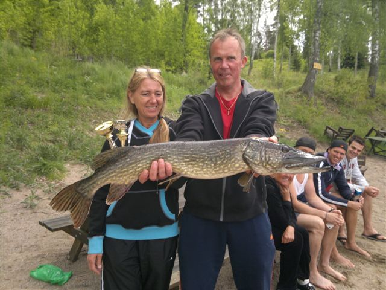

Fiskekommittén
På denna sida kan man finna info om Fiskekommitténs aktiviteter. Vid Strömshammars vägförenings årsmöte 2010 beslutades att fiskekortet skall ingå i medlemsavgiften. Man skall medföra fiskekort vid fiske i våra sjöar. Ladda ned kortet från högerspalten. Fyll i tomtnummer, sedan är det bara att hoppas på god fiskelycka!
Fiskekommittén består av:
Allan Johansson
0708905114
Joakim Björklund
087743579
Kenneth Modig
0766480894
Fisketävlingen i Henaren 26/5-12
Vi var 8st båtar som fiskade och vi fick sammanlagt 22st gäddor.
1a platsen gick till Jonas Crona tomt 83 + Leffe Nordström tomt 32 på 6st gäddor
2a platsen gick till Allan och Tim tomt 110 på 5st gäddor
3a Dennis med familj tomt 41 på 3st gäddor
Största gäddan fick Dennis båt den var på 4,6kg
Tack till Kenneth Modig som hjälpte till att arrangera fisketävlingen.
